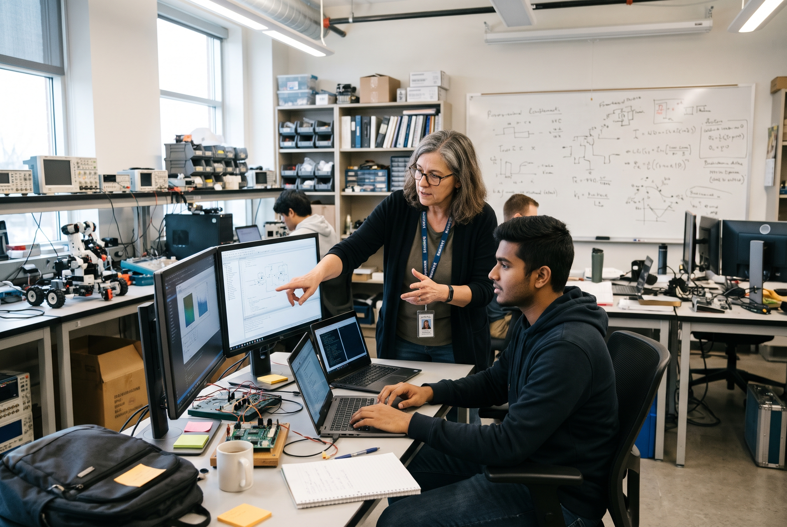
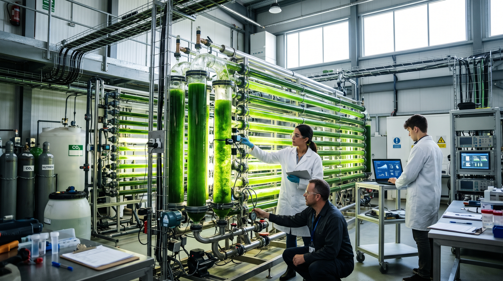

WE HAVE ONE OBJECTIVE
To share UTP-CERDAS strength and capability towards resilient data analytics and computational systems research.
CERDAS aspires to share UTP’s strength and capability in data analytics and computational systems research. The centre focuses on three project pillars — Solution Data Driven, Ecosystem Infrastructure, and Human Development. Together these support digital readiness across client ecosystems, develop customised AI solutions built around real domain pain points, and create a platform for talent development that combines technical know-how with data expertise.
PILLAR 01
Solution Data Driven
Customised AI and analytics solutions built around real domain pain points, not generic models.
PILLAR 02
Ecosystem Infrastructure
Digital readiness across client ecosystems — the platforms and pipelines that make deployment possible.
PILLAR 03
Human Development
A talent platform that combines technical know-how with data expertise, from postgraduate to practitioner.
VISION
To conduct research and develop researchers who deliver resilient, intelligent solutions for industry and society.
To become a leading centre for data analytics and computational systems, recognised nationally and internationally for research excellence and translated impact.
MISSION
MISSION 01
To advance research across artificial intelligence, computational science, intelligent systems, and next-generation computing.

MISSION 02
To develop the research leaders and technical talent of the next decade.

MISSION 03
To translate research into deployable technologies, platforms, and solutions.
MISSION 04
To collaborate with industry partners on problems that matter to them, with energy and heavy industry as a founding strength.
NICHE AREA
Four strands, delivered across the six research groups below.
N1 · AI & DATA INTELLIGENCE
Analytics environments that combine domain expertise, computational capability, and statistical rigour to extract decisions, not just insights, from operational data.
N2 · COMPUTATIONAL SCIENCE & OPTIMISATION
Descriptive through prescriptive analytics for industrial assets — corrosion rate prediction, remaining useful life estimation, and data quality assurance.
N3 · INTELLIGENT & DISTRIBUTED SYSTEMS
Machine learning and AI modelling adapted to specific client problems rather than applied generically.
N4 · NEXT-GENERATION COMPUTING
Computational and distributed systems research — simulation, optimisation, edge intelligence, and high-performance computing — that makes the above run at operational scale.